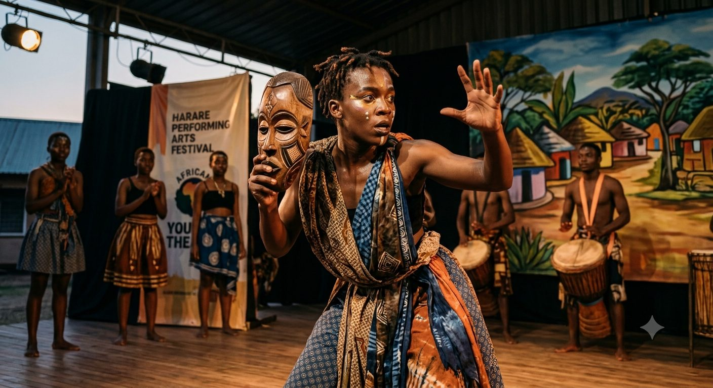

Giving young people a stage to build confidence and celebrate culture.
Building confidence and cultural pride through drama, dance, music and storytelling — on stage and in the community.
VisionTo celebrate and preserve the artistic traditions of Limpopo's communities while giving young people a stage — literally — to build confidence, creativity and cultural pride.

Five ways we bring performance to life
Drama & Theatre Productions
Original and adapted stage plays performed by learners. Script-writing and stagecraft workshops, with opportunities to perform for the community and at regional festivals.
Traditional & Contemporary Dance
Instruction in traditional Southern African dance forms alongside contemporary styles. Ensemble rehearsals building discipline and teamwork.
Music & Storytelling
Indigenous storytelling traditions kept alive through performance. Percussion and vocal ensembles, and oral history projects connecting learners with elders.
Costume, Set & Craft Design
Hands-on design and construction of costumes, masks and stage sets, blending traditional craft techniques with modern materials.
Festivals & Public Performance
Participation in regional and national performing arts festivals, and end-of-term showcases for family and community — building public speaking and performance confidence that carries into every other area of life.
Why It Matters
Confidence
Performing in front of an audience builds self-assurance that carries into interviews, presentations and everyday life.
Cultural Pride
Rooting creative expression in Limpopo's own stories, languages and traditions.
Community
Bringing families and neighbours together around shared performance and celebration.